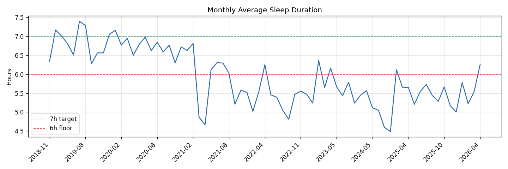
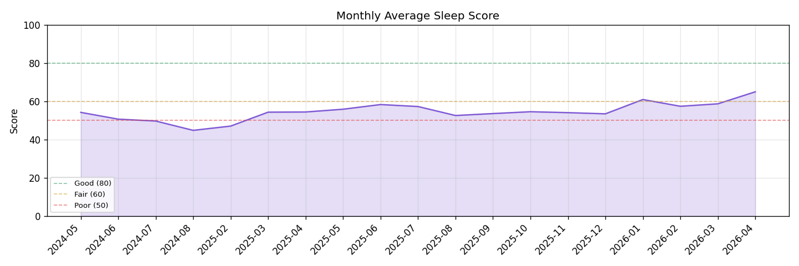
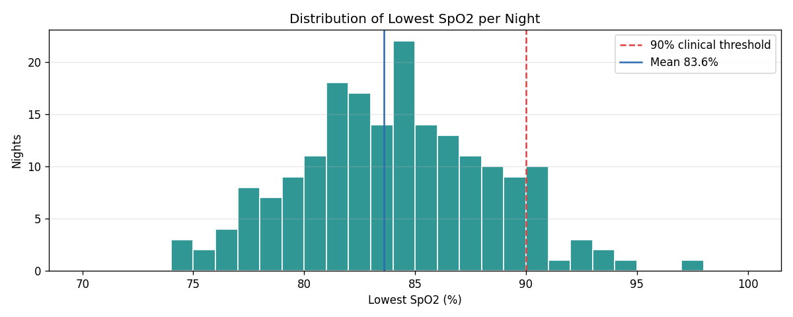
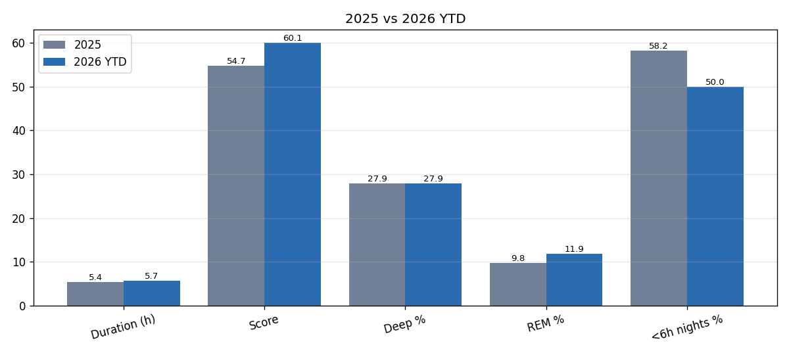
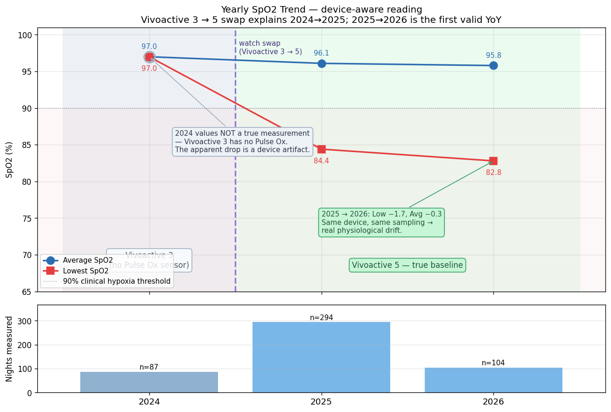

關鍵分析洞察：睡眠門診（OSA 排除）此次優先序升至心臟科之上。診間 BP 153/88 vs 居家 BP 128/79，25 mmHg 白袍落差意味部分急性異常屬狀態假象，但五年慢性睡眠負債是下游惡化的真正上游。
Layer 0 — 最上游 · 五年慢性根源 (2021–2026)
五年慢性睡眠剝奪（2021–2026）
2020 年 6h44m → 2021 驟降 5h52m → 2024 谷底 4h49m → 2026 回升 5h39m
低 SpO2 <90% 佔 90.5% 夜晚 → OSA 近乎確診級證據
Layer 1 — 當前上游根源
睡眠品質不足
Sleep Score 多日 < 70 / BB 起床 < 50
夜尿 2–4 次 / 疑似 OSA
飲食計劃執行落差
計劃完整，記錄仍不連續
熱量 / 食物來源不明
飲水不足
日記多日未達 2.5 L
尿酸排泄效率下降
慢性壓力 / 交感亢進
工作強度高 + 睡眠不足疊加
白袍血壓落差 25 mmHg
Layer 2 — 中游 · 生理機制
皮質醇持續偏高
HPA 軸亢進 → 肝產 VLDL 增
腹部脂肪優先堆積
胰島素阻抗
睡眠不足 1 週即可誘發
HbA1c 連續兩次 ≥ 5.9%
肝臟代謝過載
AST 27 → 38（上升中）
脂肪肝未完全消退
血管內皮功能受損
高尿酸 + 高 LDL + 慢性壓力
動脈結構重塑（主動脈迂曲）
Layer 3 — 檢驗指標（2026-03-25）
LDL 膽固醇
154 mg/dL（177 → 154，-23）
仍 > 130 目標，方向正確
HDL（逆向惡化）
39 mg/dL（46 → 39，-7）
Trade-off Warning
尿酸
8.9 mg/dL（8.6 → 8.9，+0.3）
持續緩慢惡化
HbA1c / 空腹血糖
5.9% / 90 mg/dL（微改善）
糖尿病前期邊界持續
AST 肝酵素
38（27 → 38，+41%）
超過 34 上限
體重 / 體脂
69.6 kg / 體脂 21.5%
體脂 -3.4%（半年改善）
Layer 4 — 功能性警示
白袍血壓效應
診間 153/88 vs 居家 128/79
落差 25 mmHg（狀態假象）
ECG 功能性異常
前壁 ST 上升 > 0.20 mV V1–V4
需與缺氧/早期再極化鑑別
OSA 疑似
夜尿 + BB 低 + 晨間疲倦
本次列首優先排除項
Layer 5 — 結構性損傷 · 六大新增器官訊號
① ECG 結構變化
LVH + 雙心房擴大（新增）
長期血壓負荷 / OSA 後果
② 主動脈輕度迂曲
CXR：mild tortuous aorta
動脈老化早期訊號
③ 雙肺紋增加
CXR：prominent bilateral lung markings
需追蹤鑑別（慢性 vs 發炎）
④ 眼內壓升高
IOP 19 / 19 mmHg（接近 21 門檻）
青光眼前期風險
⑤ 左耳聽力異常
500 Hz + 4000 Hz 雙頻未通過
低+高頻均受損（非典型）
⑥ 糞便潛血 / 消化道
Stool OB 49；RBC/WBC 0–5/HPF
疑痔瘡但需大腸鏡排除
Layer 6 — 下游 · 臨床綜合結果
心血管綜合風險
LDL 154 + HDL 39 + LVH + 尿酸 8.9
TC/HDL 4.9（仍接近危險）
代謝前期僵局
HbA1c 5.9% × 兩次
減重停滯 → 逆轉空間收斂
加速老化徵兆群
主動脈、IOP、聽力、LVH 同步出現
睡眠負債的典型表型
醫療順序重排
睡眠門診 > 心臟科 > 眼科 > 耳鼻喉科
治本優先於治標
本次改善（勿放棄）
hs-CRP 再降 53%
0.302 → 0.142 mg/L（回正常）
運動 + 魚油 + 睡眠修復
LDL 下降 23
177 → 154 mg/dL（-13%）
飲食方向正確
總膽固醇 -43
234 → 191 mg/dL
回到 < 200 目標
體脂率 -3.4%
24.9% → 21.5%（半年）
腰圍 -1.5 cm（85.5→84.0）
PWV 持續正常
2025 起維持 < 1500 cm/s
有氧運動維持動脈彈性
Plan B 結果（2026-04-18 完成）：
① 因果起點確認於 2021 年，睡眠時長從 2020 6h44m 驟降至 5h52m（-52 分鐘），與 LDL、HbA1c、體重上升軌跡起點一致。
② 2024 為最深谷底（4h49m / Score 50.1），對應健檢指標最惡化年。
③ 最低 SpO2 < 90% 夜晚 90.5%（172/190）—— OSA 級生理訊號，為 LVH、雙心房擴大、主動脈迂曲之共同解釋。
④ 2026 YTD 已回升（5h39m / Score 60.1），方向正確但未達 7h 健康門檻。
完整分析：reports/garmin-sleep-analysis.md
Plan B 圖表佐證 · Garmin 2018–2026

月均睡眠時長：2020 年後結構性下滑，2024 谷底，2026 回升未達 7h

月均 Sleep Score：50.1 → 54.7 → 60.1 趨勢回升

最低 SpO2 分布：90.5% 夜晚低於 90%，OSA 級訊號

2025 vs 2026 YTD：Score +5.3、<6h 夜晚 -8.2pp，修復方向正確

SpO2 年趨勢（裝置校正版）：2024 Vivoactive 3 無 Pulse Ox 感測器，該年數值並非真實量測；2024→2025 的 −12.6 完全是換錶效應。2025 為真實基準年（Vivoactive 5 首次得出 Low SpO2 84.4，一開始就 < 90），2025→2026 −1.7 為同裝置同採樣下的真實生理漂移 —— OSA 訊號首次可見即已確立。